Qui paie la consultation de M. P. ?
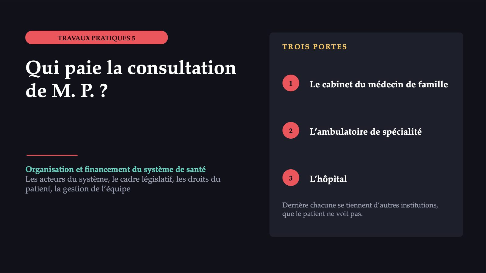
1 / 40M. P. voit, sur son parcours, trois portes : le cabinet du médecin de famille, l’ambulatoire de spécialité et, peut-être, l’hôpital. Derrière chaque porte se tiennent pourtant d’autres institutions, que le patient ne voit pas.
Lundi matin, au cabinet de la ville D
![ACTE 1 · LA SITUATION CAS CONSTRUIT Lundi matin, au cabinet de la ville D 1 M. P., 61 ans, assuré, atteint d’un diabète sucré de type 2 et d’une hypertension artérielle. 2 Depuis un mois : oppression dans la poitrine en montant les escaliers, qui passe au repos. 3 Électrocardiogramme fait au cabinet : pas de modifications aiguës. 4 Lettre d’orientation vers la cardiologie, à l’ambulatoire de l’hôpital A, qui a un contrat avec la caisse d’assurance maladie. Lundi ville D, comté B Cas construit pour le cours ; les détails sont plausibles, non réels.](diapozitive/LP05/002.jpg) 2 / 40
2 / 40Lundi matin, au cabinet de médecine de famille de la ville D, comté B. M. P. a 61 ans, il est assuré, inscrit depuis de nombreuses années sur la liste du cabinet. Le médecin de famille lui remet une lettre d’orientation vers la cardiologie, à l’ambulatoire de spécialité de l’hôpital A, qui a un contrat avec la caisse d’assurance maladie du comté. Cas construit pour le cours ; les détails sont plausibles, non réels.
Qui paie la consultation de cardiologie de M. P., et sur quel fondement ?
![DÉCISION 1 · VOTE INDIVIDUEL, SANS DISCUSSION MENTIMETER · VOTE Qui paie la consultation de cardiologie de M. P., et sur quel fondement ? A Le ministère de la Santé, sur le budget de l’État, parce que l’ambulatoire appartient à un hôpital public. B La caisse d’assurance maladie du comté, sur le fonds unique, selon le contrat et la lettre d’orientation. C La direction de santé publique du comté, qui contrôle l’ambulatoire. D Le patient, qui se fait ensuite rembourser par la caisse d’assurance maladie. [code QR Mentimeter] Répondez sur le téléphone, au code affiché.](diapozitive/LP05/003.jpg) 3 / 40
3 / 40La question, votée individuellement, sans discussion : qui paie la consultation de cardiologie de M. P., et sur quel fondement ?
Convainquez celui qui a voté autrement. Puis votez de nouveau.
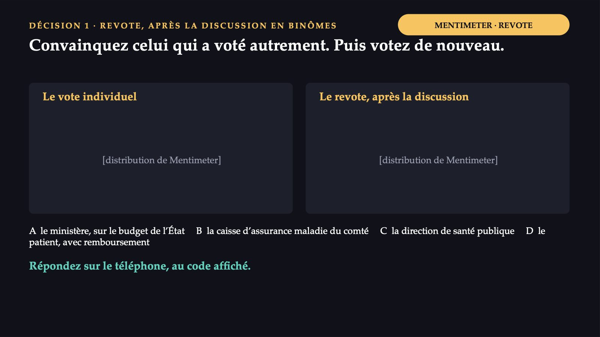
4 / 40Deux minutes de discussion avec votre voisin de banc, avec la consigne « convainquez celui qui a voté autrement », puis le même vote. L’explication ne vient qu’après le revote.
Les règles, le contrôle et le paiement
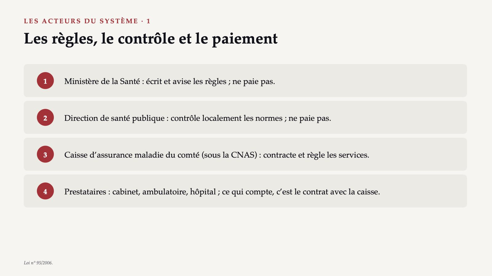
5 / 40Le ministère ne paie pas la consultation de M. P. ; il écrit et avise les règles dans lesquelles elle se déroule. Pour M. P., la direction de santé publique est l’institution qui peut vérifier si l’ambulatoire et le cabinet fonctionnent selon les normes, et non l’institution qui paie.
Qui autorise, qui accrédite, qui est le patient
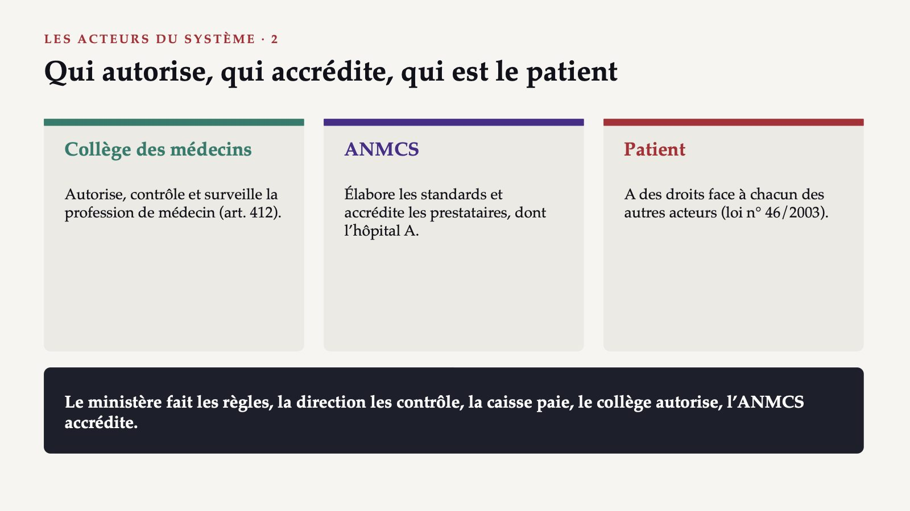
6 / 40Le médecin de famille et le cardiologue de M. P. peuvent exercer parce qu’ils sont membres du collège. Pour M. P., l’accréditation de l’hôpital A est la garantie, vérifiée de l’extérieur, que l’hôpital respecte un ensemble de standards, y compris ceux qui concernent les droits du patient.
Quatre actes, de niveaux différents
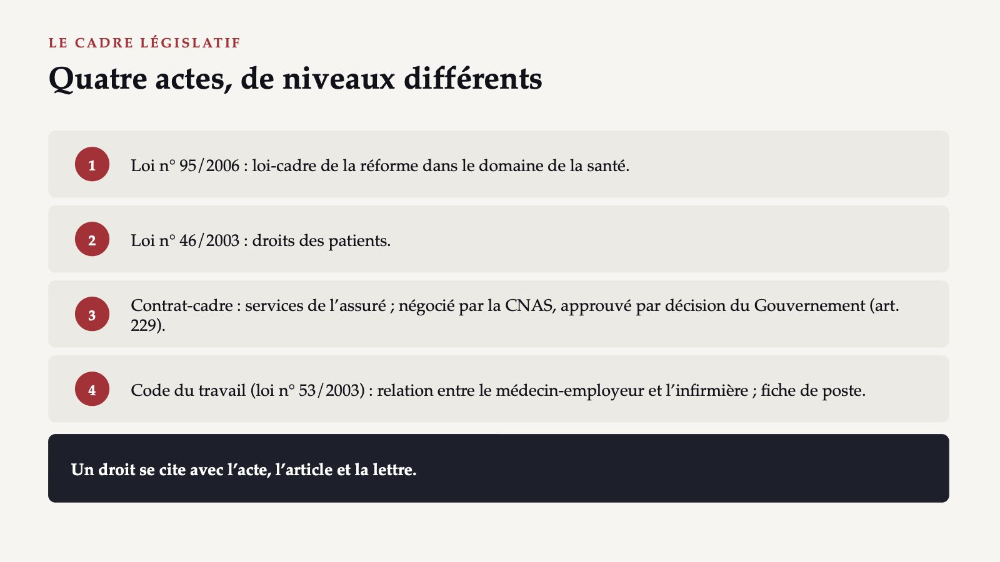
7 / 40La règle de travail pour la fiche de travail : un droit ou une obligation se cite avec l’acte normatif, avec l’article et, le cas échéant, avec l’alinéa et la lettre, dans la forme consolidée actuelle. « C’est écrit dans la loi » n’est pas un argument ; « art. 22 de la loi n° 46/2003 » en est un.
Le médecin de famille comme filtre
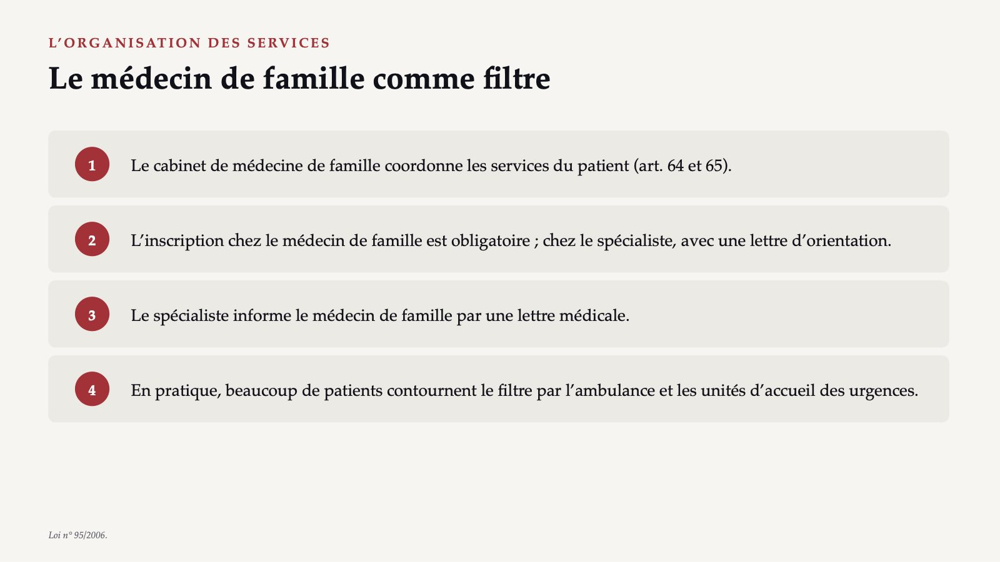
8 / 40L’inscription chez un médecin de famille est obligatoire, et la consultation chez le spécialiste, réglée par la caisse d’assurance maladie, exige une lettre d’orientation. L’analyse du système roumain montre que le filtre fonctionne mal : beaucoup de patients contournent le médecin de famille par l’ambulance et les unités d’accueil des urgences.
Quatre options, quatre conséquences
![DÉCISION 1 · COMMENT SE TRANCHENT LES OPTIONS Quatre options, quatre conséquences A Propriétaire, pas payeur Les investissements viennent du budget ; le service courant est réglé par la caisse. B Correct La caisse du comté règle, sur le fonds national unique, sur la base du contrat et de la lettre d’orientation. C Contrôle, pas paiement La direction contrôle les normes de fonctionnement ; elle ne règle pas. D Remboursement, pas assurance Chez le prestataire sous contrat, l’assuré ne paie pas et ne demande pas de remboursement.](diapozitive/LP05/009.jpg) 9 / 40
9 / 40La consultation de cardiologie de M. P. est payée par la caisse d’assurance maladie du comté, sur le FNUASS, parce que l’ambulatoire a un contrat avec elle et que le patient vient avec une lettre d’orientation du médecin de famille (variante B).
Étape 1 : la carte des acteurs et des flux
![FICHE DE TRAVAIL 5 · ÉTAPE 1 MICROSOFT FORMS · 6 MINUTES Étape 1 : la carte des acteurs et des flux a Qui règle la consultation de cardiologie ? b Qui a négocié les règles selon lesquelles elle est réglée ? c Qui peut contrôler si l’ambulatoire fonctionne selon les normes ? d Qui a autorisé le cardiologue à exercer ? e Qui a accrédité l’hôpital A ? f Qui coordonne les services reçus de tous les prestataires ? [code QR du formulaire] [lien court] Pour chacune : l’institution et le fondement légal. Puis la carte : l’argent, le patient, l’information. Répondez sur le téléphone, au code affiché.](diapozitive/LP05/010.jpg) 10 / 40
10 / 40Étape 1 de la fiche de travail : la carte des acteurs et des flux pour le parcours de M. P.
Les trois composantes du paiement du médecin de famille
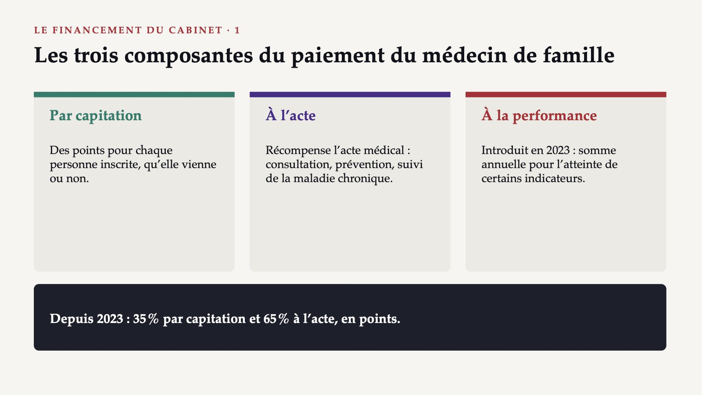
11 / 40Jusqu’en 2023, les médecins de famille ont été payés à 50 % par capitation, avec un ajustement selon l’âge et le sexe des patients, et à 50 % à l’acte ; depuis 2023, le rapport est de 35 % par capitation et de 65 % à l’acte, les deux étant exprimés en points.
2 200
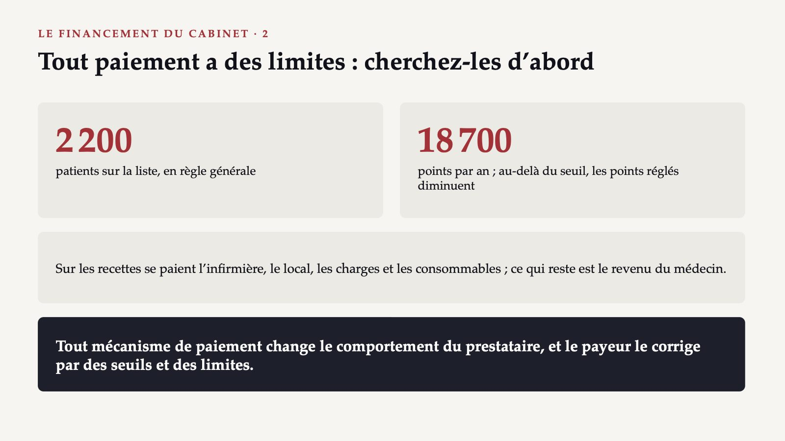
12 / 40La liste d’un cabinet sous contrat compte, en règle générale, au plus 2 200 patients ; un nombre plus élevé est permis, mais la formule du paiement par capitation le décourage. Au-delà de ce seuil, qui correspond à plus de 18 700 points par an, les points réglés diminuent, sauf dans les zones en déficit de médecins. Pour comprendre un mécanisme de paiement, cherchez d’abord ses limites, pas seulement sa formule.
1 750
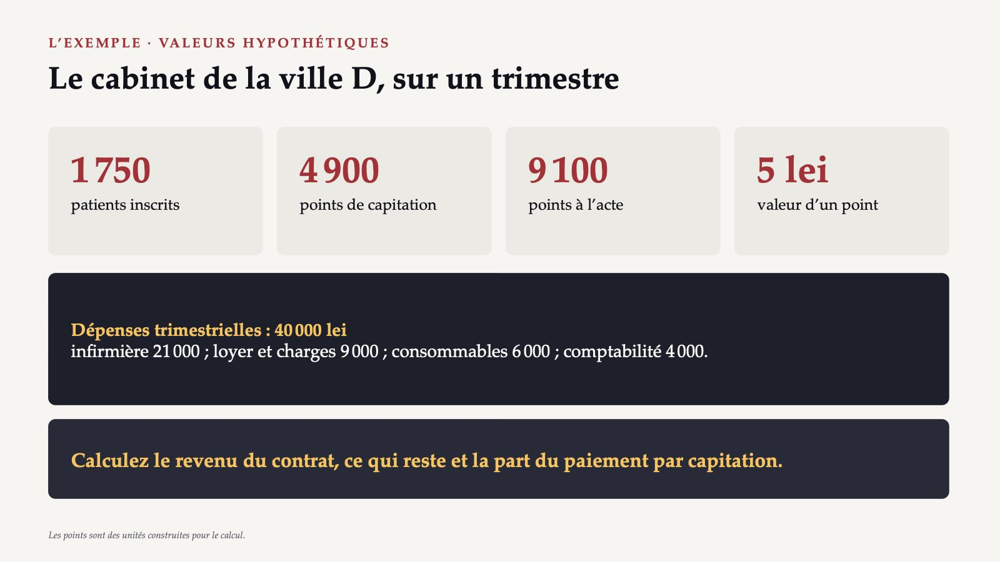
13 / 40Valeurs hypothétiques. Le cabinet a 1 750 patients inscrits. En un trimestre, sa liste produit 4 900 points de capitation, et les services déclarés produisent 9 100 points à l’acte. Pour simplifier, les deux points ont ici la même valeur, 5 lei. Les dépenses trimestrielles du cabinet sont de 40 000 lei.
Étape 2 : le financement du cabinet
![FICHE DE TRAVAIL 5 · ÉTAPE 2 MICROSOFT FORMS · 6 MINUTES Étape 2 : le financement du cabinet a Le revenu du contrat avec la caisse et ce qui reste après les dépenses. b La part du paiement par capitation ; à quelle structure réelle correspond-elle ? c Refaites le calcul après le départ de 250 patients (mêmes points par patient, mêmes dépenses). d Pourquoi le revenu du médecin baisse-t-il, en proportion, davantage que la liste ? [code QR du formulaire] [lien court] Utilisez la calculatrice. Les points sont des unités construites. Répondez sur le téléphone, au code affiché.](diapozitive/LP05/014.jpg) 14 / 40
14 / 40Étape 2 de la fiche de travail : le financement du cabinet de la ville D.
La résolution s’affiche dans le formulaire de la fiche, une fois celle-ci remise.
La résolution s’affiche dans le formulaire de la fiche, une fois celle-ci remise.
Jeudi, à l’heure d’ouverture, le téléphone du cabinet sonne
 16 / 40
16 / 40Jeudi, à l’heure d’ouverture, le téléphone du cabinet sonne. Le médecin est en visite à domicile. La fille de M. P., qui habite dans une autre ville, dit que son père « ne veut rien leur dire » et demande quel diagnostic il a reçu et quel traitement il suit. L’infirmière ouvre la lettre médicale dans le dossier du cabinet et la lui lit.
Qu’aurait dû faire l’infirmière au téléphone ?
![DÉCISION 2 · VOTE INDIVIDUEL, SANS DISCUSSION MENTIMETER · VOTE Qu’aurait dû faire l’infirmière au téléphone ? A Lire la lettre à la fille : un enfant est le représentant légal du patient. B Ne pas donner d’informations au téléphone : les proches ne peuvent être informés qu’avec l’accord du patient. C Lui lire la lettre : le cabinet coordonne les soins, et la loi permet de communiquer sans consentement. D Lui dire seulement que le résultat « n’est pas grave », sans diagnostic. [code QR Mentimeter] Répondez sur le téléphone, au code affiché.](diapozitive/LP05/017.jpg) 17 / 40
17 / 40La question, votée individuellement, sans discussion : qu’aurait dû faire l’infirmière au téléphone ?
Convainquez celui qui a voté autrement. Puis votez de nouveau.
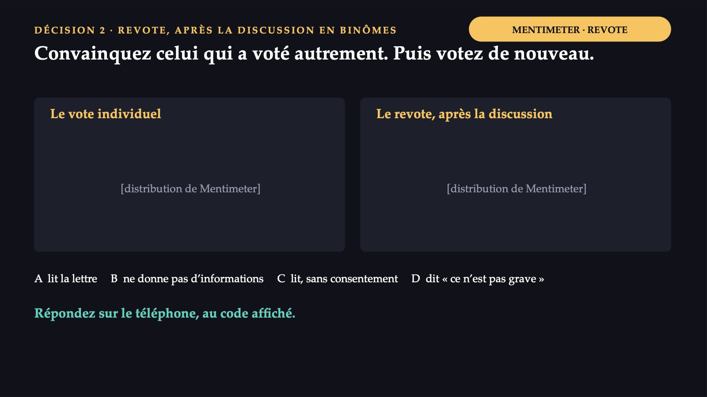
18 / 40Deux minutes de discussion, avec la consigne « convainquez celui qui a voté autrement », puis le même vote. L’explication vient après le revote.
Loi n° 46/2003 : trois chapitres de pratique
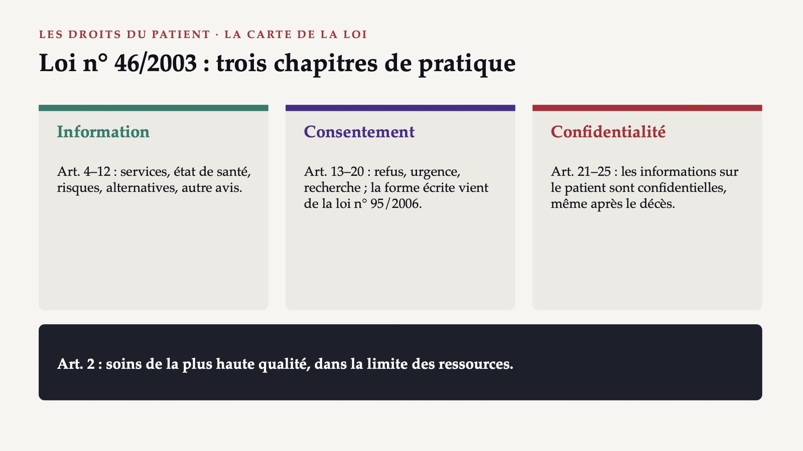
19 / 40Pour un médecin, les situations de pratique les plus fréquentes relèvent de trois chapitres : l’information, le consentement et la confidentialité. La première formulation ne promet pas tout : elle lie le droit aux ressources du système, c’est-à-dire précisément au financement discuté dans la section 2.
Le patient contrôle qui apprend quoi, et jusqu’où
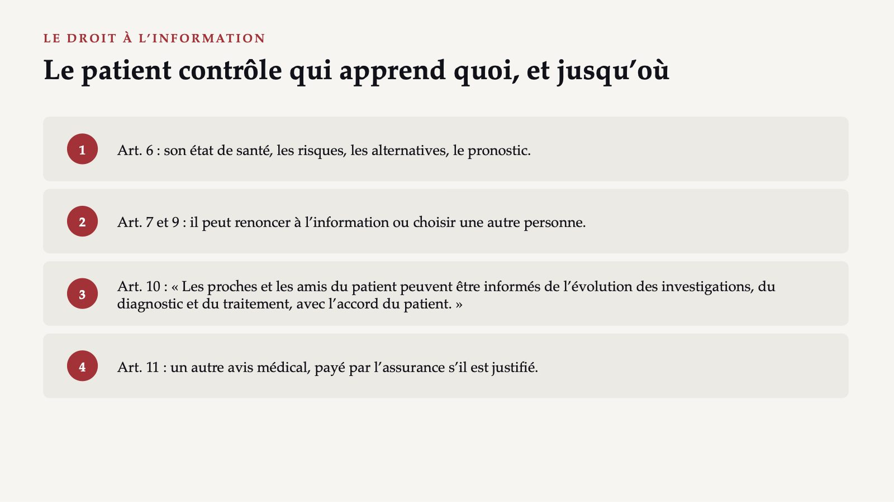
20 / 40« Les proches et les amis du patient peuvent être informés de l’évolution des investigations, du diagnostic et du traitement, avec l’accord du patient » (art. 10).
Le refus, l’urgence, l’accord écrit et le mineur
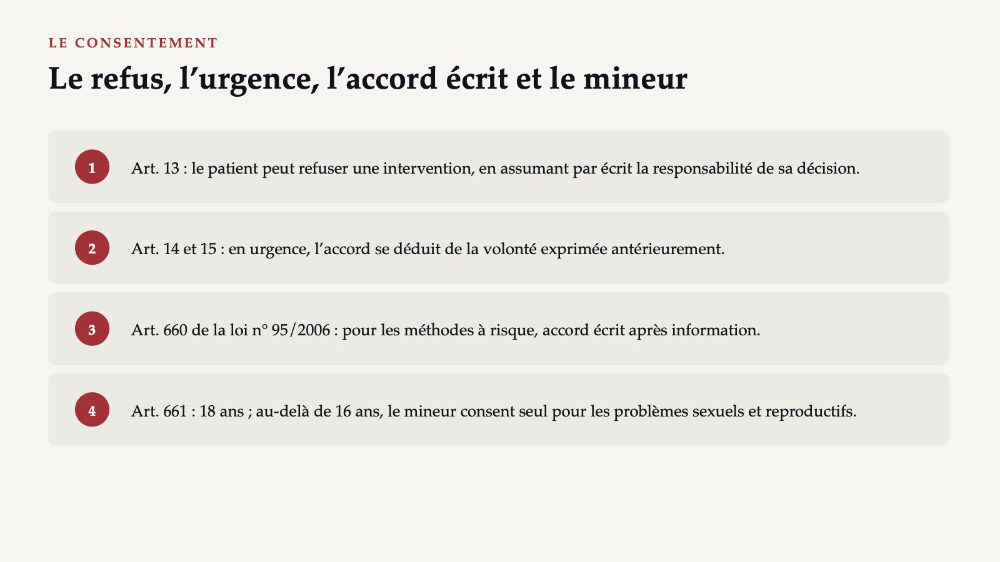
21 / 40La coronarographie de M. P. est un tel acte : l’accord écrit, après une information ayant ce contenu, était obligatoire. L’âge légal du consentement éclairé est de 18 ans.
Ce qui peut être donné à un autre, et quand
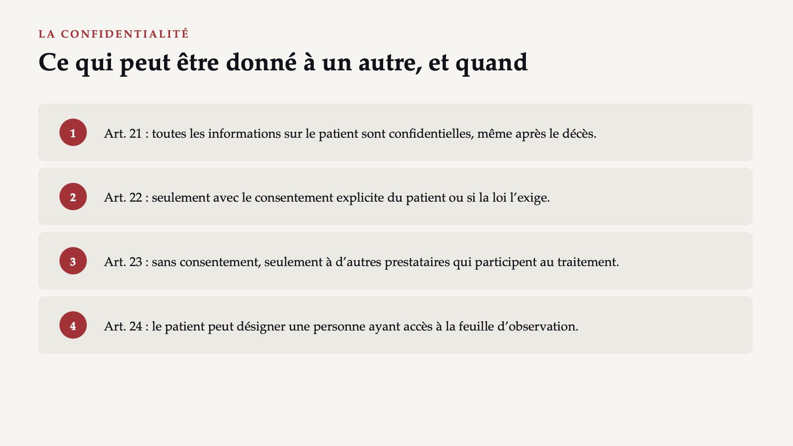
22 / 40L’exception de l’art. 23 concerne donc les médecins et les unités qui traitent le patient, et non sa famille.
La continuité, la reproduction et la violation des droits
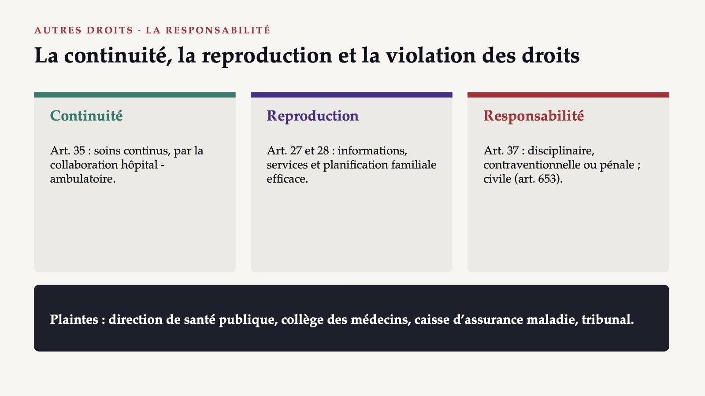
23 / 40Le non-respect par le personnel médico-sanitaire de la confidentialité des données du patient et de ses autres droits entraîne, selon le cas, la responsabilité disciplinaire, contraventionnelle ou pénale (art. 37). La loi n° 95/2006 ajoute la responsabilité civile.
La résolution s’affiche dans le formulaire de la fiche, une fois celle-ci remise.
La résolution s’affiche dans le formulaire de la fiche, une fois celle-ci remise.
Étape 3 : les droits du patient, avec l’article
![FICHE DE TRAVAIL 5 · ÉTAPE 3 MICROSOFT FORMS · 6 MINUTES Étape 3 : les droits du patient, avec l’article a À l’hôpital : que devait comprendre l’information, et pourquoi la forme écrite ? b L’infirmière a lu la lettre à la fille : quel droit a été enfreint ? c M. P. demande un autre avis : en a-t-il le droit, et qui paie ? d S’il avait refusé la coronarographie, que devait-il se passer ? [code QR du formulaire] [lien court] Pour chaque situation : le droit et l’article qui le prévoit. Répondez sur le téléphone, au code affiché.](diapozitive/LP05/025.jpg) 25 / 40
25 / 40Étape 3 de la fiche de travail : les droits du patient sur le parcours de M. P., avec l’article.
Ce que fait chaque membre de l’équipe, et qui en répond
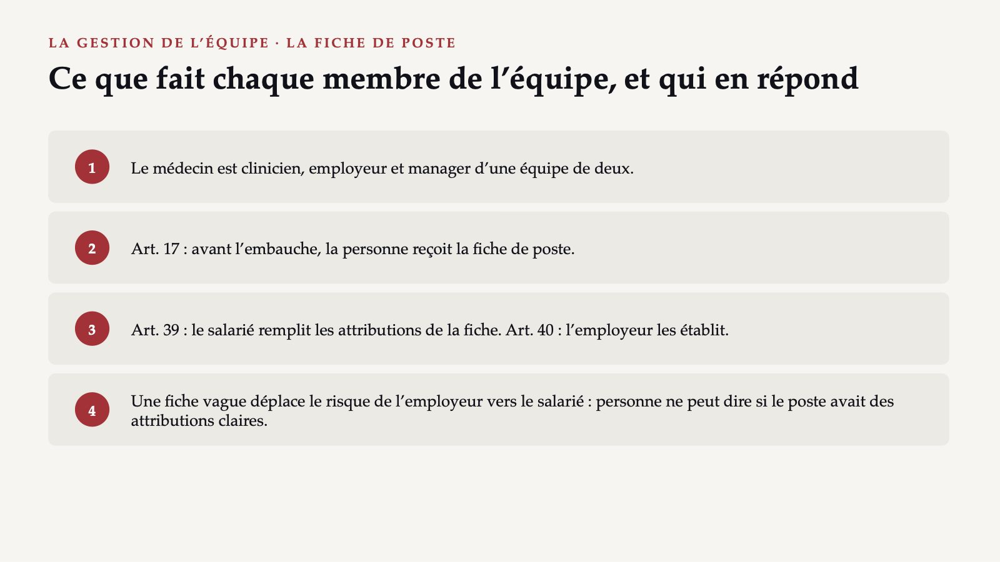
26 / 40La fiche de poste est donc le document par lequel l’employeur dit ce que fait chaque membre de l’équipe, et le salarié répond de ce qui y est écrit.
La fiche de poste de l’infirmière (extrait)
![L’EXEMPLE · VALEURS HYPOTHÉTIQUES La fiche de poste de l’infirmière (extrait) 1 Accueille les patients, vérifie la qualité d’assuré, programme les consultations. 2 Mesure la tension artérielle, la glycémie, le poids et la taille. 3 Effectue les traitements injectables et les vaccinations prescrits par le médecin. 4 « Répond au téléphone et donne des informations aux patients. » 5 Archive les lettres médicales et les résultats d’analyses. 6 « Accomplit toutes autres tâches fixées par le médecin. » La fiche ne dit rien sur la confidentialité, sur l’identification de l’appelant ni sur ce que l’infirmière peut donner.](diapozitive/LP05/027.jpg) 27 / 40
27 / 40Valeurs hypothétiques. La fiche est construite pour le cours ; elle ne reproduit pas un modèle officiel. Les attributions 4 et 6 de la fiche construite sont précisément celles qui ont produit l’incident. « Donne des informations aux patients » ne dit pas quelles informations, à qui ni comment se vérifie l’identité ; « toutes autres tâches » ne dit rien.
M. P. a appris l’appel et demande des explications
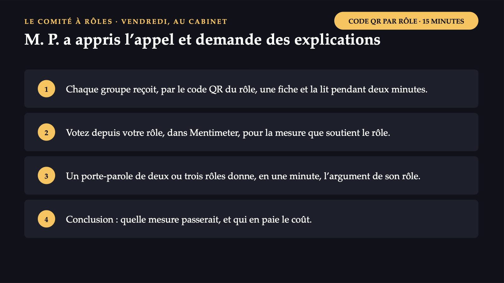
28 / 40Le comité se réunit vendredi, au cabinet, après que M. P. a appris l’existence de l’appel et a demandé des explications. Chaque groupe reçoit, par le code QR du rôle, l’une des fiches, lit le rôle pendant deux minutes et vote depuis son rôle, dans Mentimeter, pour la mesure qu’il soutient.
Qui siège autour de la table du comité
![LE COMITÉ · CINQ RÔLES Qui siège autour de la table du comité Le médecin de famille, titulaire Objectif : Garder la confiance de M. P. et la liste de patients. [QR du rôle] L’infirmière Objectif : Ne pas être sanctionnée pour une chose que personne ne lui a interdite. [QR du rôle] M. P., le patient Objectif : Avoir confiance que ce qu’il dit au cabinet y reste. [QR du rôle] La fille du patient Objectif : Pouvoir aider son père, qui minimise toujours ce qui lui arrive. [QR du rôle] Représentant de la caisse Objectif : Que les prestataires sous contrat respectent les droits des assurés. [QR du rôle]](diapozitive/LP05/029.jpg) 29 / 40
29 / 40Chaque groupe reçoit, par le code QR du rôle, l’une des fiches ci-dessous, lit le rôle pendant deux minutes et vote depuis son rôle.
Quelle mesure soutenez-vous, depuis votre rôle ?
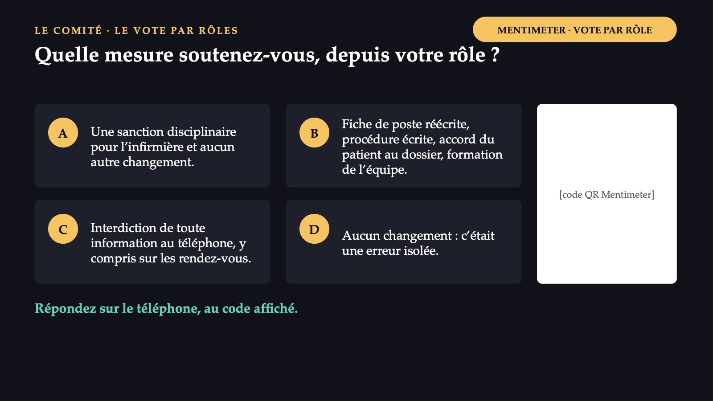
30 / 40Le vote par rôles est projeté ; un porte-parole de deux ou trois rôles donne, en une minute, l’argument de son rôle. La conclusion : quelle mesure passerait et qui en paie le coût.
Étape 4 : la fiche de poste et la décision de management
![FICHE DE TRAVAIL 5 · ÉTAPE 4 MICROSOFT FORMS · 6 MINUTES Étape 4 : la fiche de poste et la décision de management a Les deux attributions qui ont produit l’incident et ce qui manque dans la fiche. b L’obligation du Code du travail qui lie la fiche à la responsabilité de l’infirmière ; le droit du médecin. c La décision de management en trois lignes, et comment saurez-vous dans un mois qu’elle a fonctionné. [code QR du formulaire] [lien court] Lisez l’extrait de la fiche de poste. La décision doit avoir un indicateur vérifiable. Répondez sur le téléphone, au code affiché.](diapozitive/LP05/031.jpg) 31 / 40
31 / 40Étape 4 de la fiche de travail : la fiche de poste de l’infirmière et la décision de management.
La résolution s’affiche dans le formulaire de la fiche, une fois celle-ci remise.
La résolution s’affiche dans le formulaire de la fiche, une fois celle-ci remise.
La résolution s’affiche dans le formulaire de la fiche, une fois celle-ci remise.
La résolution s’affiche dans le formulaire de la fiche, une fois celle-ci remise.
Cas construit ; dénouement plausible, non documenté
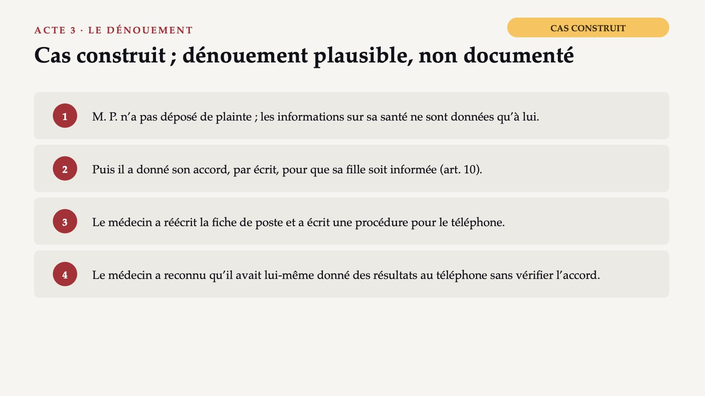
34 / 40Le cas est construit, et le dénouement ci-dessous est un dénouement plausible, non un dénouement documenté. M. P. n’a pas déposé de plainte.
Patiente de 17 ans, seule, demande une contraception et prie que ses parents ne l’apprennent pas. Que fait le médecin ?
![DÉCISION 3 · VOTE INDIVIDUEL, SANS DISCUSSION MENTIMETER · VOTE Patiente de 17 ans, seule, demande une contraception et prie que ses parents ne l’apprennent pas. Que fait le médecin ? A Il reporte la consultation jusqu’à ce qu’elle vienne avec un parent : l’âge du consentement est de 18 ans. B Il la consulte et garde la confidentialité : au-delà de 16 ans, elle peut consentir seule. C Il la consulte, mais prévient ses parents, parce qu’ils sont ses représentants légaux. D Il ne la consulte que s’il s’agit d’une urgence. [code QR Mentimeter] Répondez sur le téléphone, au code affiché.](diapozitive/LP05/035.jpg) 35 / 40
35 / 40Trois mois plus tard, dans le même cabinet. Une patiente de 17 ans inscrite sur la liste du cabinet vient seule et demande une consultation pour une contraception ; elle demande que ses parents ne l’apprennent pas. La question, votée individuellement : que fait le médecin ?
Convainquez celui qui a voté autrement. Puis votez de nouveau.
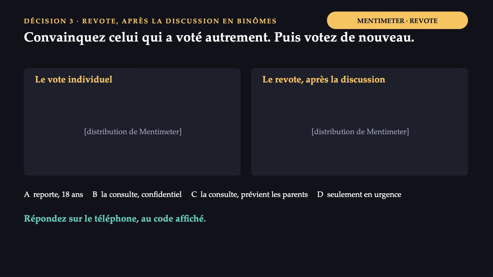
36 / 40Les deux distributions sont projetées ; l’explication vient après le revote.
Art. 661 lettre b) : le consentement de la mineure de plus de 16 ans
![DÉCISION 3 · LE TEXTE DE LA LOI Art. 661 lettre b) : le consentement de la mineure de plus de 16 ans « situations médicales liées au diagnostic et/ou au traitement des problèmes sexuels et reproductifs, à la demande expresse du mineur âgé de plus de 16 ans » 1 La loi ne nomme pas la contraception : l’y rattacher est une interprétation (art. 27 et 28). 2 Les parents ne peuvent pas l’apprendre sans le consentement de la mineure (art. 21 et 22) : déduction du texte, non règle écrite expressément. B correct. A ignore l’exception, C répète l’erreur de l’acte 2, D confond les deux exceptions.](diapozitive/LP05/037.jpg) 37 / 40
37 / 40Le médecin la consulte et garde la confidentialité (variante B). Voici le texte de la loi, à l’art. 661 lettre b). La loi ne nomme pas la contraception. Le rattachement de la consultation pour une contraception à cette exception est une interprétation. Pour les parents, la réponse se déduit de l’art. 22 : c’est une déduction à partir du texte, non une règle écrite expressément.
Cinq idées de la séance
![CE QU’IL FAUT RETENIR Cinq idées de la séance 1 La consultation de spécialité, avec lettre d’orientation, est réglée par la caisse du comté. 2 Le ministère fait les règles, la direction les contrôle, la caisse paie, le collège autorise, l’ANMCS accrédite. 3 Médecin de famille : 35 % par capitation, 65 % à l’acte, avec des limites. 4 Informations sur le patient : seulement avec son consentement ; les proches, avec son accord. 5 Une fiche vague se corrige en changeant la règle, pas seulement la personne.](diapozitive/LP05/038.jpg) 38 / 40
38 / 40Le patient assuré ne paie pas la consultation de spécialité chez un prestataire sous contrat s’il vient avec une lettre d’orientation. La fiche de poste est l’instrument par lequel l’employeur établit qui fait quoi.
Ce que cela signifie pour vous
 39 / 40
39 / 40Le patient voit trois portes ; le médecin doit savoir quelle institution se tient derrière chacune et quel droit le patient a devant elle. Lundi matin, dans le premier cabinet où vous travaillerez, lisez la fiche de poste de l’infirmière avec qui vous travaillez et demandez quelles informations elle donne au téléphone.
Trois questions pour finir
40 / 40Code QR sur la dernière diapositive, trois questions ouvertes : « Qu’est-ce qui a été utile ? », « Où vous ai-je perdus ? », « Que pourriez-vous utiliser demain ? ».
Flèches ou espace : navigation · O : vue d’ensemble · N : notes de l’intervenant · F : plein écran · Échap : fermer